Shirako, Chiba: things to do, food and stays
Shirako · Chiba
Shirako
Highlighted on the Chiba map.
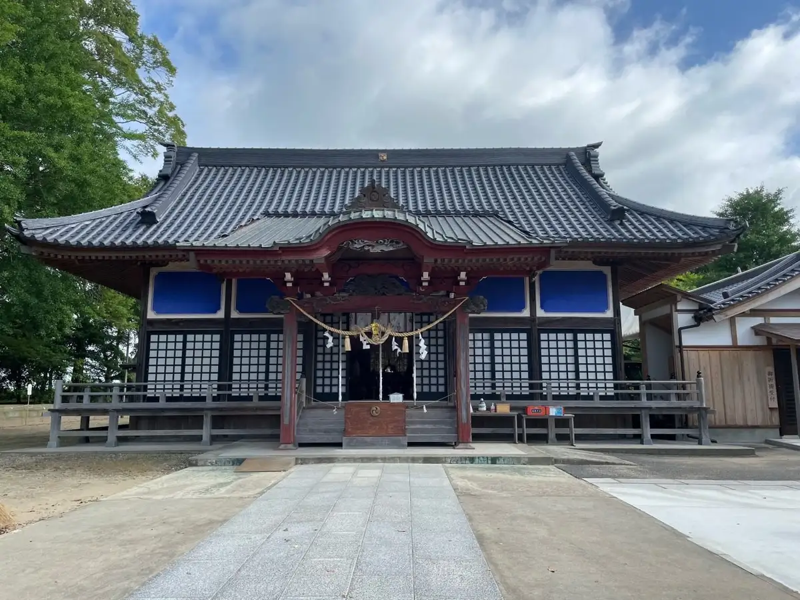
Stay
和海の宿ささ游
Wa Umi No Yado Sasa Yu
Inn in Nakazato, Shirako with open-air baths and private baths.
九十九里浜 白子温泉 青松庭 白砂
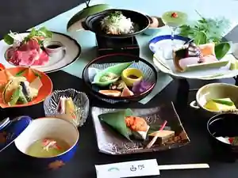
Kujukurihama Shirako Onsen Aomatsu Niwa Shirasu
Inn at Shirako Onsen in Kotokoro, Shirako.
白子ニューシーサイドホテル
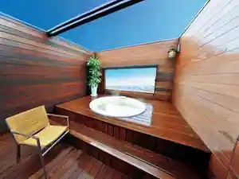
Shirako Nyushisaido Hotel
Hotel in Nakazato, Shirako with open-air baths and private baths.
九十九里浜 豪漁の宿 浜紫
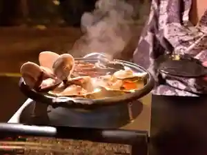
Kujukurihama Go Ryo No Yado Hama Murasaki
Inn in Nakazato, Shirako with local seafood dinners.
ホテルニューカネイ
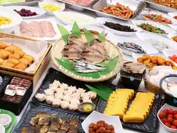
Hotel Nyukanei
Hotel at Kujukurishirako Onsen in Nakazato, Shirako with local seafood dinners.
白子温泉 東海荘
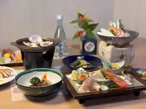
Shirako Onsen Tokai So
Inn at Shirako Onsen in Nakazato, Shirako with local seafood dinners.
ホテル カアナパリ
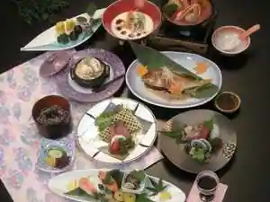
Hotel Kanapari
白子温泉 サンシャイン・白子
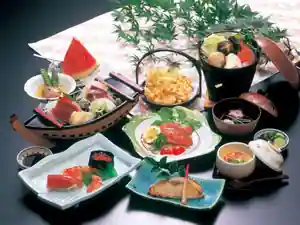
Shirako Onsen Sanshain Shirako
Inn at Shirako Onsen in Nakazato, Shirako.
白子温泉 白子ホワイトパレス
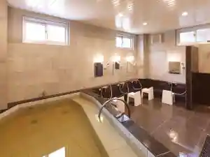
Shirako Onsen Shirako Howaitoparesu
Inn at Shirako Onsen in Nakazato, Shirako with local seafood dinners.
ニュー山中荘
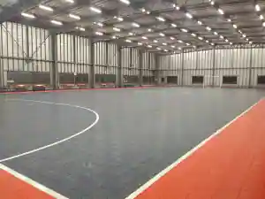
Nyu Sanchu So
Inn at Satohamadeyuitsuno Onsen in Nakazato, Shirako with local seafood dinners.
レンタルハウス なかざと
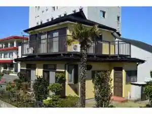
Rentaru House Nakazato
ペンション 小さな白い家
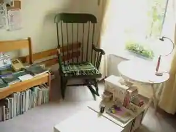
Pension Chisa Na Shiroi Ie
Dining
ラ・サレッタ
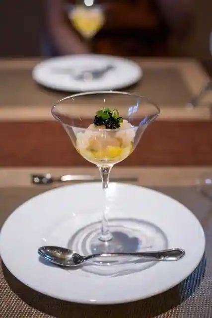
Ra Saretta
カネサカミートショップ
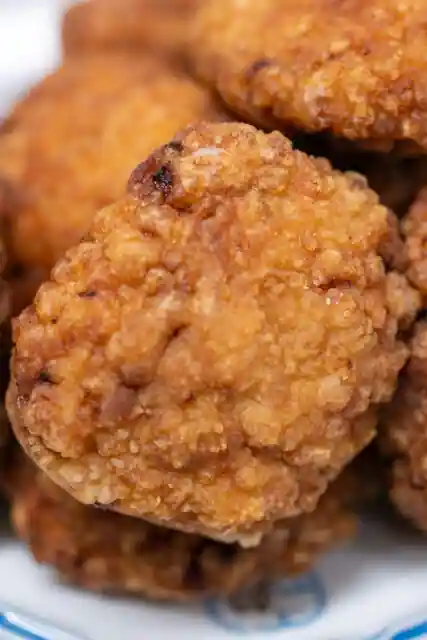
Kanesakamitoshoppu
そば処川岸
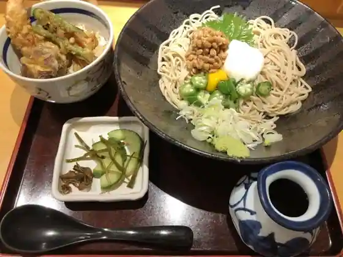
Soba Tokoro Kawagishi
炭火らあぁめんいち
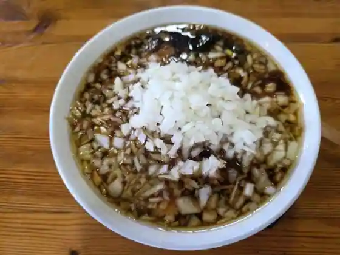
Sumibi Raamen'Ichi
岡本
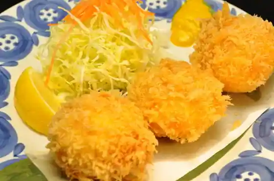
Okamoto
魚心亭
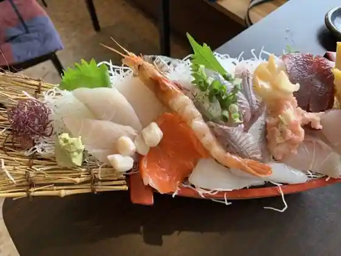
Uogokoro Tei
チャイニーズレストラン大幸
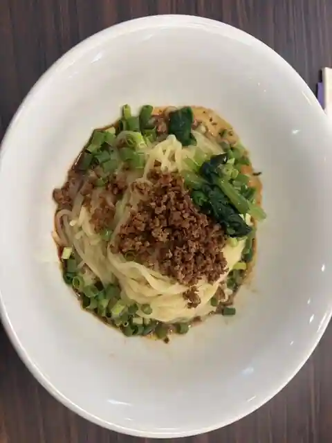
Chainizu Restaurant Daiko
まきのきてい
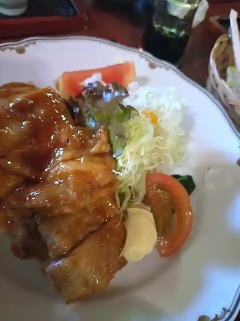
Makinokitei
樹
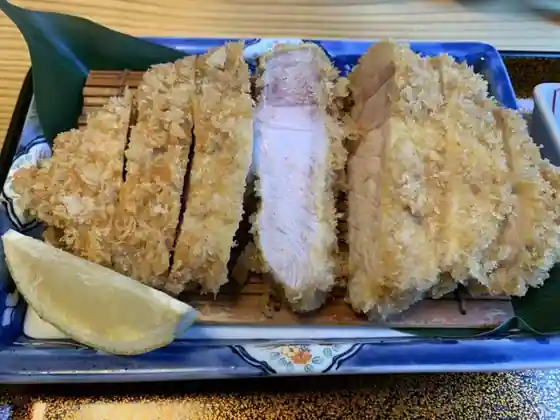
Ki
洋食屋 かわごえ
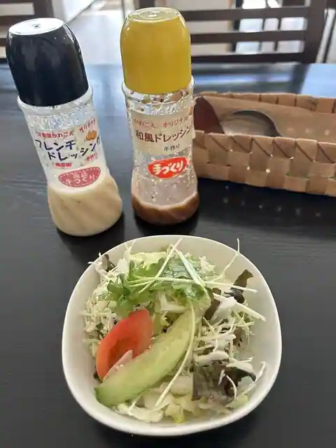
Yoshoku Ya Kawagoe
パンセ
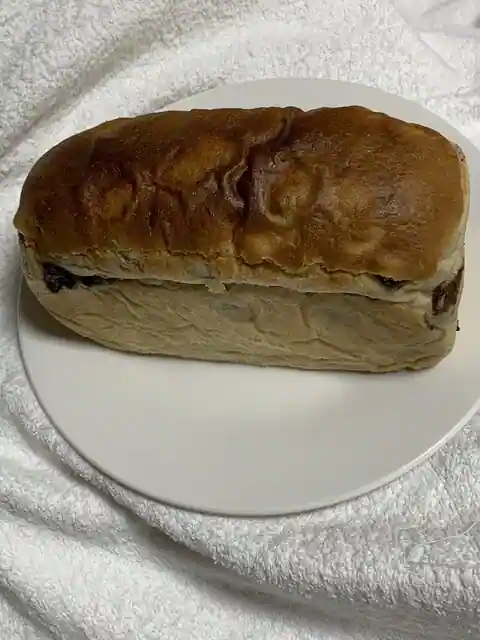
Bakery Se
海風館
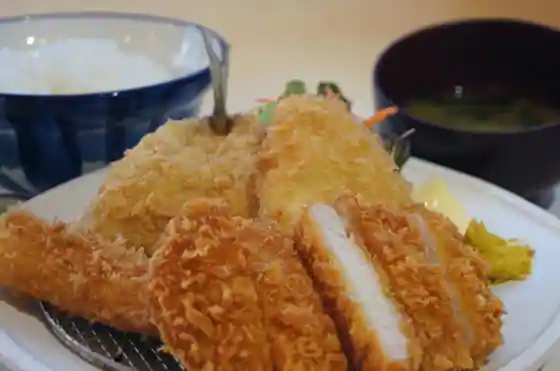
Umikaze Kan
浜紫
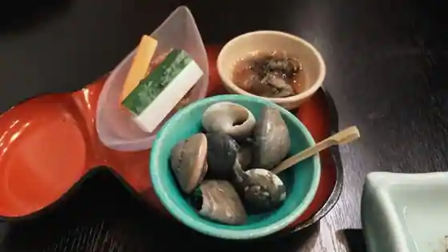
Hama Murasaki
kitchen Kono
kitchen Kono
サンフルール
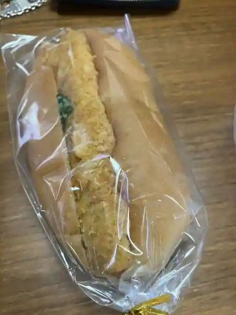
Sanfururu
ニューカネイ
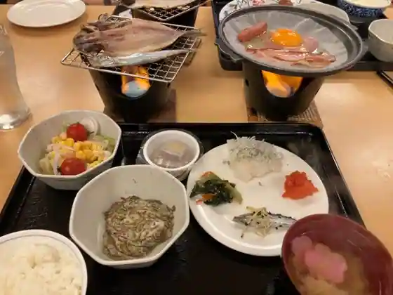
Nyukanei
寿し清
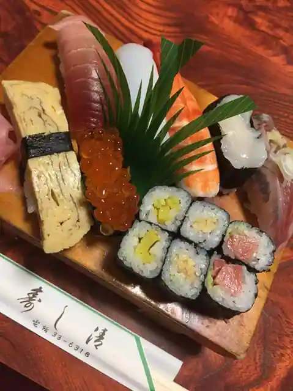
Hisashi Shi Kiyoshi
白砂
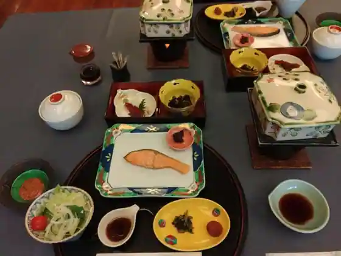
Shirasu
しろぜん
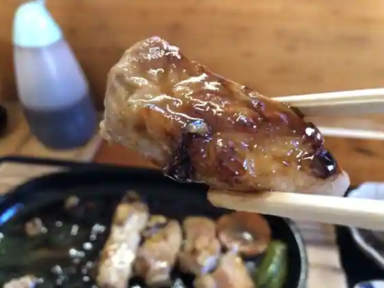
Shirozen
海の家ともや
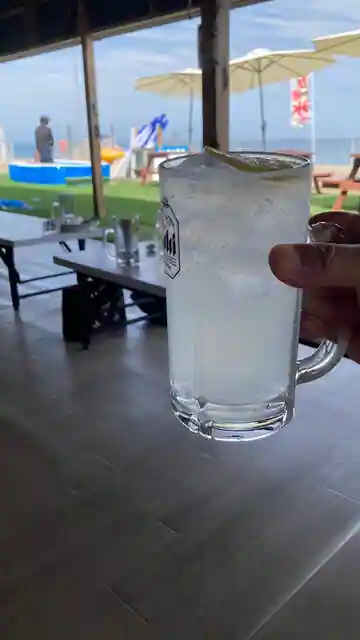
Uminoie Tomoya
WEEKEND CAFE 99
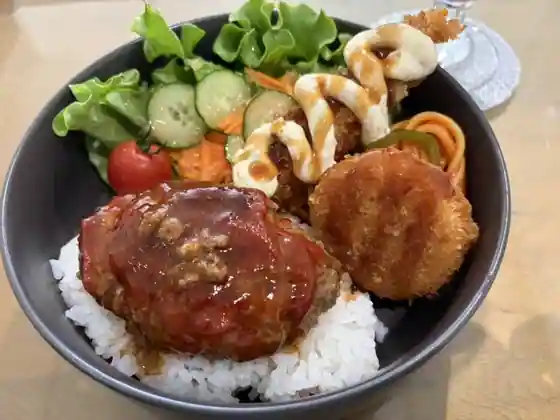
WEEKEND CAFE 99
Sights
Shirako Shrine
Umigame no Oka
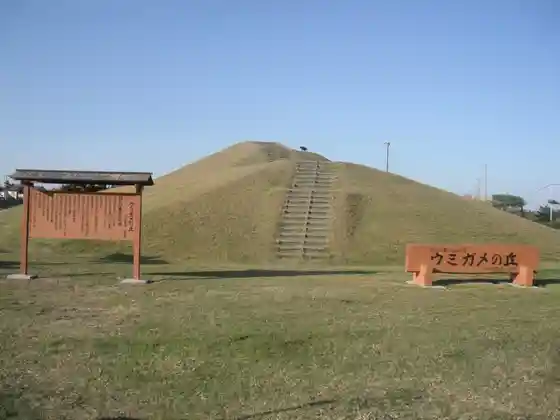
Nakazato Coast (Nakazato Beach)
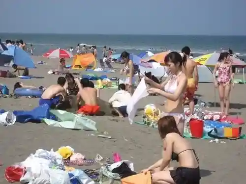
Genki Village
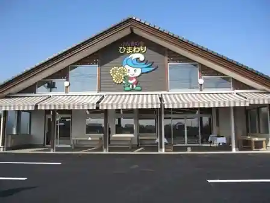
Ko Tokoro Beach
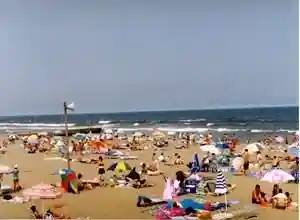